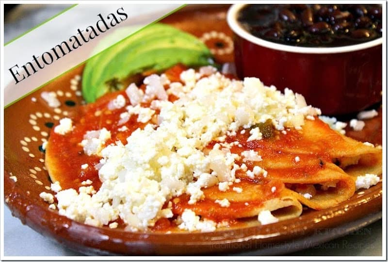
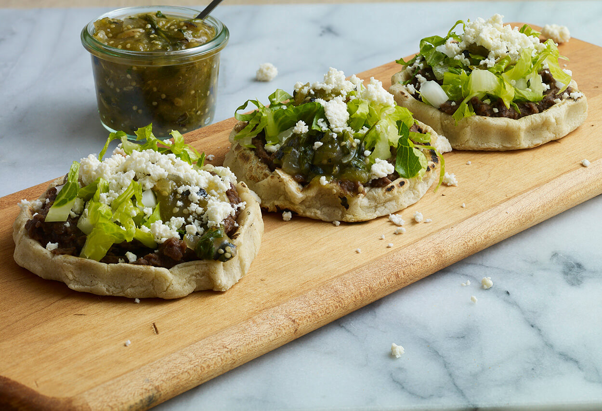
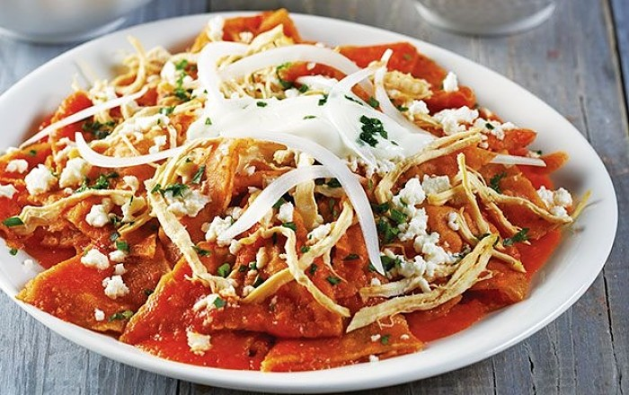
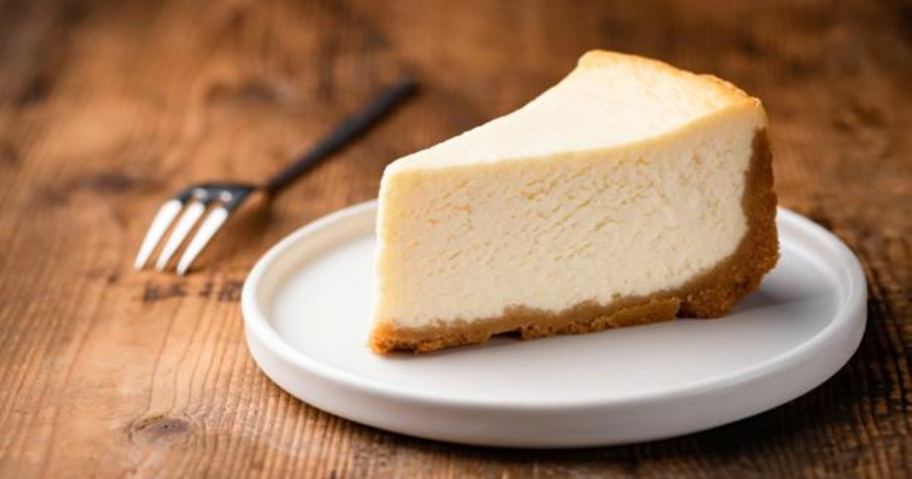

RECETAS
INGREDIENTES
- 250 gramos de queso panela partido en bastones.
- 2 tazas de pan molido.
- 5 rebanadas de jamón en mitades.
- 1/4 de taza de leche.
- 1 huevo.
- Aceite para freír.
PREPARACION
- Colocamos un recipiente amplio.
- Añadimos el huevo.
- Añadimos la leche.
- Batimos.
- Colocamos el pan molido en un recipiente amplio.
- Tomamos un bastón de queso.
- Tomamos una rebanada de jamón.
- Enrollamos el bastón de queso.
- Pasamos nuestro rollito por el huevo.
- Pasamos el rollo por el pan molido.
- Volvemos a pasar por el huevo.
- Volvemos a pasar por el pan molido.
- Una vez que esta empanizado reservamos.
- Colocamos un sartén en el fuego.
- Añadimos aceite y dejamos calentar.
- Freímos nuestros dedos de queso perfectamente.
- Retiramos del fuego y colocamos en papel absorbente para quitar el exceso de grasa.

INGREDIENTES
- 3 cucharadas de Knorr Tomate Deshidratad
- 1 cucharada de Knorr Caldo de Pollo
- 1 cucharada de aceite
- 1/4 cebolla finamente picada
- 1 diente de ajo pelado y rebanado
- 1 tomate rojo
- 2 1/2 tazas de agua
- 1 pizca de comino molido
- 1/4 taza de aceite vegetal
- 8 tortillas de maiz
- 8 rebanadas de queso asadero
- 2 tazas de calabacitas salteadas con mantequilla
PREPARACION
- Para preparar la salsa; licuar la cebolla, ajo, tomate y 1 taza de agua. Colar.
- Sofreír la salsa en una olla con el aceite caliente y cocinar por 4 minutos. Mezclar el agua restante con Knorr® Tomate Deshidratado y combinar con el caldillo sofrito anteriormente. Sazonar con Knorr® Caldo de pollo y comino.
- Freír las tortillas en el aceite caliente y reservar en toallas de papel para retirar el exceso de aceite. Rellenar con las rebanadas de queso y doblar en mitad. Reserva.
- Remojar las tortillas rellenas en el caldillo de tomate por 30 segundos. Servir dos piezas en cada plato, bañar con más salsa y acompañar con las calabacitas salteadas.

INGREDIENTES
- 12 sopes chicos
- 300 gramos de queso ranchero La Villita
- 200 gramos de frijoles refritos calientes
- Un vasito de crema
- Salsa roja o verde al gusto
- Dos cucharadas de aceite
PREPARACION
- Los sopes siempre me sacan de apuros en el desayuno o la cena, amigas. Esta es una de mis recetas rápidas infalibles.
- Para empezar, colocamos el aceite en una sartén, donde calentaremos uno por uno nuestros sopes. Cuando los tengamos calentitos, los serviremos en una charola para comenzar a ensamblarlos. Primero los untaremos con los frijoles y luego les agregaremos la crema y el queso ranchero La Villita desmoronado.
- Al terminar, podemos agregarles nuestra salsa favorita. ¡A disfrutarlos!

INGREDIENTES
- 1 kilo de jitomate/li>
- 1/2 cebolla
- 3 dientes de ajo
- Sal y pimienta
- Chiles serranos al gusto
- 1 cucharada de aceite
- 1 taza de agua
- 250 gramos de jamón o tocino, troceado y ligeramente frito
- 250 gramos de queso oaxaca deshebrado
- 100 gramos de queso manchego en rebanadas
- 200 gramos de queso cotija
- Crema al gusto
- 1 bolsa de totopos o 15 tortillas cortadas en cuartos y fritas
PREPARACION
- ASA el jitomate en un comal y licúa junto con la cebolla, el ajo y los chiles.
- SAZONA la salsa recién licuada en una olla con una cucharada de aceite. Sazona con sal y pimienta; hierve por 10 minutos. Agrega la taza de agua si es necesario.
- COLOCA en un refractario una capa de totopos, otra de jamón o tocino y otra de queso oaxaca deshebrado; forma capas hasta terminar con los ingredientes.
- AGREGA el queso manchego en la última capa.
- VIERTE la salsa de tomate hirviendo. Tapa y hornea hasta que el queso se gratine, sirve con crema y queso cotija rallado.

INGREDIENTES
- 30 GRAMOS DE MANTEQUILLA
- 80 MILILITROS DE LECHE ENTERA DE VACA
- 5 HUEVOS
- 360 GRAMOS DE QUESO RANCHERO
- 1 LATA (397 GRAMOS) DE LECHE CONDENSADA
- 200 GRAMOS DE AZÚCAR
PREPARACION
- PRECALIENTA EL HORNO A 180 ºC. ENGRASA UN MOLDE PARA HORNEAR PEQUEÑO.
- LICÚA EL QUESO JUNTO CON LA LECHE ENTERA, LECHE CONDENSADA, HUEVOS Y AZÚCAR HASTA TENER UN LICUADO UNIFORME. VIERTE DENTRO DEL MOLDE.
- COLOCA EL MOLDE CON EL PASTEL DENTRO DE UN MOLDE DE MAS GRANDE (POR LO MENOS 3 CENTÍMETROS MÁS ANCHO) Y VIERTE AGUA TIBIA EN EL MOLDE GRANDE. HORNEA A BAÑO MARÍA EN LA REJILLA DEL CENTRO DEL HORNO DURANTE 50 MINUTOS O HASTA QUE EL CENTRO SE VEA FIRME.
- RETIRA DEL HORNO Y DEJA ENFRIAR. REFRIGERA DURANTE 3 HORAS.
INGREDIENTES
- 18 piezas de cuadros de masa de canelones
- 2 tazas de crema espesa
- 2 tazas de salsa de jitomate
- 600 gramos de queso Oaxaca
.
- 300 gramos de queso chihuahua o manchego
- 30 piezas/li>
- 1 taza de jitomate picado
PREPARACION
- HIERVE y enfría en agua con hielo los cuadros de canelones.
- RALLA todo el queso y mezclarlo con el Oaxaca.
- RELLENA cada canelón con 3 cucharadas de queso y acomoda en una platón rectangular profundo, previamente engrasado.
- REPITE el procedimiento hasta que termines con los canelones.
- MEZCLA en una olla la salsa de jitomate con la crema hasta que se incorpore y rompa el hervor.
- BAÑA los canelones con la salsa fría y los cuadritos de jitomates. Espolvorea la albahaca picada.
- ESPOLVOREA más queso y hornea durante 15 minutos tapado y otros 10 minutos destapado para que dore el queso.